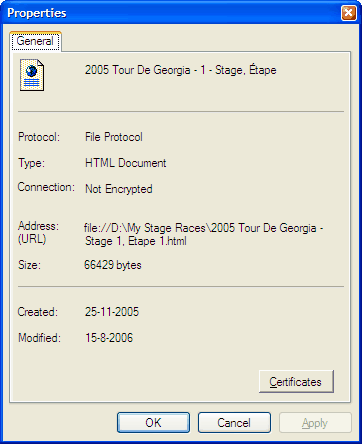

Info on Publication
Through in the
menu you can invoke a dialog showing information about the file of the publication
that is currently displayed in the
publication view.
The following details about the publication are shown:
- Title;
- File location or address;
- File size;
- Creation
date; and
- Date of last modification.

| This file was originally part of our V2003 software version, that was now shipped as part
of a V2005 bèta release — The information in this file may for that
reason not be entirely up-to-date or not be entirely accurate — The Help system
will shortly be updated in one of the upcoming releases of StageRace 2005 |

|